Zeichnungsobjekte erstellen und bearbeiten
Create-Draw-Objects
Fügen Sie Zeichenobjekte zu Ihren Origin-Fenstern hinzu mit Hilfe von Schaltflächen der Symbolleiste Hilfsmittel.
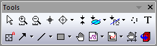
Zusätzlich können Sie "Klammern mit Sternchen" verwenden -- Balken kennzeichnen statistische Gruppierungen -- mit Hilfe der Schaltfläche Klammern mit Sternchen hinzufügen auf der Symbolleiste Objekt zu Diagramm hinzufügen.
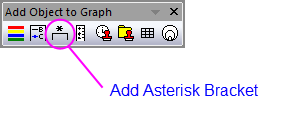
Gerade Linien oder Pfeile zeichnen
Um eine gerade Linie der einen Pfeil in das Diagrammfenster einzufügen:
- Klicken Sie auf das Hilfsmittel Linie
 oder Pfeil
oder Pfeil  . Klicken Sie auf die gewünschte Stelle im Diagrammfenster und ziehen Sie mit der Maus das Objekt dorthin. Lassen Sie die Maustaste los und die Linie (oder der Pfeil) wird angezeigt.
. Klicken Sie auf die gewünschte Stelle im Diagrammfenster und ziehen Sie mit der Maus das Objekt dorthin. Lassen Sie die Maustaste los und die Linie (oder der Pfeil) wird angezeigt.
- Um eine vertikale oder horizontale Linie oder einen Pfeil, drücken Sie die Shift-Taste, während Sie mit den Hilfsmitteln Linie bzw. Pfeil ziehen. Die Linie wird automatisch vertikal oder horizontal gezeichnet. Wenn Sie mit der Anzeige zufrieden sind, lassen Sie die Maustaste los.
| Hinweis: Wenn Sie eine vertikale oder horizontale Linie innerhalb des Layerrahmens zeichnen möchten, wählen Sie Einfügen: Gerade hinzufügen: Dialog öffnen im Menü, um den Dialog Grade hinzufügen: addline zu öffnen. In diesem Dialog können Sie eine vertikale oder horizontale Linie zum aktuellen Diagrammlayer hinzufügen, indem Sie den Positionswert, das Linienformat, das Beschriftungsformat, die Linienwählbarkeit und -mobilität festlegen. |
Um die Linie zu bearbeiten:
- Um den Anfangs- oder Endpunkt der Linie anzupassen, klicken Sie einmal auf den Punkt. Die gefüllten Symbole für den Anfangs- und Endpunkt der Linie wird gezeigt. Wenn sich der Cursor auf dem Punkt befindet, können Sie den Anfangs- und Endpunkt der Linie durch Ziehen an den Punkten ändern. Sie können auch auf die Schaltfläche
 auf der Minisymbolleiste Punkte bearbeiten klicken oder im Kontextmenü Punkte bearbeiten auswählen, um den Modus Punkte bearbeiten aufzurufen.
auf der Minisymbolleiste Punkte bearbeiten klicken oder im Kontextmenü Punkte bearbeiten auswählen, um den Modus Punkte bearbeiten aufzurufen.
- Um sie zu verschieben oder ihre Größe zu ändern, klicken Sie einmal, bis die diamantförmigen Bedienelemente gezeigt werden. Ziehen Sie an ihr, um sie zu verschieben, oder ziehen Sie an den Elementen, um die Größe zu verändern. Drücken Sie während des Ziehens an den Bedienelementen die Strg-Taste, um das Seitenverhältnis der Kurve beizubehalten.
- Halten Sie die Shift-Taste oder die Strg- und Shift-Taste während der Bearbeitung eines Punkts für ein vorhandenes Linien-/Pfeilobjekt gedrückt, und der Winkel der Linie bleibt erhalten.
- Um sie zu drehen, klicken Sie dreimal, bis kreisförmige Bedienelemente um sie herum gezeigt werden. Ziehen Sie an dem Kreiselement, um sie zu drehen. Ziehen Sie den Cursor in die Mitte der Form, um das Zentrum der Drehung zu ändern.
- Um die Linie schief anzuzeigen, klicken Sie viermal, bis dreieckige Bedienelemente um die Form herum gezeigt werden. Ziehen Sie an dem Dreieckselement, um die Polylinie schief anzuzeigen.
- Klicken Sie doppelt auf die Kurve, um den Dialog Eigenschaften zu öffnen, in dem Sie die Linie, die Dimension, die Pfeilspitze(n) oder den Code benutzerdefiniert anpassen können, wenn Sie auf die Kurve klicken, sie verschieben, ihre Größe verändern möchten etc.
Zeichnen von gekrümmten Pfeilen
Um einem Diagramm einen gekrümmten Pfeil hinzuzufügen:
- Klicken Sie auf das Hilfsmittel Gekrümmten Pfeil einfügen
 .
.
- Klicken Sie vier Stellen im vorgesehenen Bogen an, um die Ankerpunkte des gekrümmten Pfeils zu lokalisieren; setzen Sie hierbei den ersten Klick an den Anfang der Krümmung, die nächsten beiden Klicks entlang der Krümmung und den letzten Klick an die Stelle, wo Sie die Pfeilspitze haben möchten. Nach dem vierten Klick zeigt Origin den gekrümmten Pfeil an. Die Punkte werden mit Hilfe einer Bezier-Kurve miteinander verbunden.
Um den gekrümmten Pfeil zu bearbeiten:
- Um die Kurve zu verschieben oder ihre Größe zu ändern, klicken Sie einmal, bis die diamantförmigen Bedienelemente gezeigt werden. Ziehen Sie an ihr, um sie zu verschieben, oder ziehen Sie an den Elementen, um die Größe zu verändern. Drücken Sie während des Ziehens an den Bedienelementen die Strg-Taste, um das Seitenverhältnis der Kurve beizubehalten.
- Um den Pfeil zu drehen, klicken Sie zweimal, bis kreisförmige Bedienelemente um ihn herum gezeigt werden. Ziehen Sie an dem Kreiselement, um sie zu drehen. Ziehen Sie den Cursor in die Mitte der Form, um das Zentrum der Drehung zu ändern.
- Um die Linie schief anzuzeigen, klicken Sie dreimal, bis dreieckige Bedienelemente um die Form herum gezeigt werden. Ziehen Sie an dem Dreieckselement, um die Polylinie schief anzuzeigen.
- Sie können auch 4-mal einzeln oder auf die Schaltfläche auf der Minisymbolleiste Punkte bearbeiten klicken oder im Kontextmenü Punkte bearbeiten auswählen, um den Modus Punkte bearbeiten aufzurufen und die Spur der Kurve anzupassen.
- Klicken Sie doppelt auf die Kurve, um den Dialog Eigenschaften zu öffnen, in dem Sie die Linie, die Pfeilspitze(n), die Dimension oder den Code benutzerdefiniert anpassen können, wenn Sie auf sie klicken, sie verschieben, ihre Größe verändern möchten etc.
Gewinkelte Pfeile zeichnen
Um einen gewinkelten Pfeil zum Diagramm hinzuzufügen:
- Klicken Sie auf das Hilfsmittel Gewinkelter Pfeil
 in der Gruppe Pfeil der Symbolleiste Hilfsmittel.
in der Gruppe Pfeil der Symbolleiste Hilfsmittel.
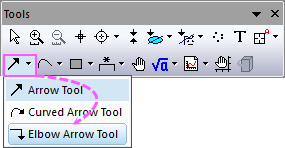
- Klicken Sie auf den Anfangspunkt und ziehen Sie die Linie dann bis zum Endpunkt. Drücken Sie während des Ziehens die Shift-Taste, um die Richtung zu wechseln: zuerst horizontal oder zuerst vertikal.
Einen gewinkelten Pfeil bearbeiten
- Klicken Sie einmal auf den Pfeil oder wählen Sie den Pfeil, um auf die Schaltfläche der Minisymbolleiste Punkte bearbeiten zu klicken, oder wählen Sie im Kontextmenü Punkte bearbeiten, um den Modus Punkte bearbeiten aufzurufen und die Spur der gewinkelten Linie anzupassen.
- Klicken Sie einmal auf den Pfeil, um ihn auszuwählen, und klicken Sie dann auf die Schaltfläche Richtung
 der Minisymbolleiste, um die Richtung der gewinkelten Linie zu wechseln.
der Minisymbolleiste, um die Richtung der gewinkelten Linie zu wechseln.
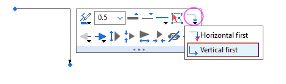
- Um sie zu verschieben oder ihre Größe zu ändern, klicken Sie, bis die diamantförmigen Bedienelemente gezeigt werden. Ziehen Sie an ihr, um sie zu verschieben, oder ziehen Sie an den Elementen, um die Größe zu verändern. Halten Sie die Strg-Taste gedrückt während des Ziehens an den Bedienelementen, um das Seitenverhältnis der gewinkelten Linie beizubehalten.
- Um sie zu drehen, klicken Sie dreimal, bis kreisförmige Bedienelemente um sie herum gezeigt werden. Ziehen Sie an dem Kreiselement, um sie zu drehen. Ziehen Sie den Cursor in die Mitte der Form, um das Zentrum der Drehung zu ändern.
- Um die Linie schief anzuzeigen, klicken Sie viermal, bis dreieckige Bedienelemente um die Form herum gezeigt werden. Ziehen Sie an dem Dreieckselement, um die Polylinie schief anzuzeigen.
- Klicken Sie doppelt auf die Kurve, um den Dialog Eigenschaften zu öffnen, in dem Sie die Linie, die Pfeilspitze(n), die Dimension oder den Code benutzerdefiniert anpassen können, wenn Sie auf sie klicken, sie verschieben, ihre Größe verändern möchten etc.
Eine Distanzanmerkung hinzufügen
Um eine Distanzanmerkung hinzuzufügen:
- Klicken Sie auf die Schaltfläche Distanzanmerkung
 auf der Symbolleiste Hilfsmittel.
auf der Symbolleiste Hilfsmittel.
- Klicken Sie auf das Diagramm und ziehen Sie einen Pfeil zwischen zwei Punkten auf dem Diagramm auf.
- Drücken Sie beim Ziehen die Shift-Taste, um den Pfeil vertikal oder horizontal auszurichten.
- Distanzanmerkungen werden auch an Datenpunkten > Achsen > Linienobjekten (einschließlich Referenzlinien) ausgerichtet. Drücken Sie die Strg-Taste, um das Ausrichten zu verhindern.
Um eine Distanzanmerkung zu bearbeiten:
Eine Beschriftung wird automatisch an das Pfeilobjekt angehängt. Die Standardbeschriftungssyntax lautet $(v,.2) -- was sich zur Distanz zwischen zwei Punkten auflöst, angegeben mit bis zu zwei Dezimalstellen. Alternativ können Anwender die Beschriftung so modifizieren, dass die horizontale (z. B. $(dx,.2)) oder vertikale (z. B. $(dy,.2)) Distanz zwischen zwei Punkten gezeigt wird, oder sogar $(dy/dx,.2), um die Liniensteigung anzugeben.
- Klicken Sie doppelt auf die Beschriftung, um den Bearbeitungsmodus aufzurufen und die Syntax nach Bedarf zu modifizieren.
- Um die Anmerkung neu zu positionieren, klicken Sie, so dass die blauen Auswahlelemente angezeigt werden, und wählen sie eines oder beide aus und ziehen Sie an ihnen. Beachten Sie, dass Sie das Diagrammfenster eventuell aktualisieren müssen, um die Beschriftung zu aktualisieren. (Klicken Sie auf die Schaltfläche Aktualisieren
 auf der Standardsymbolleiste).
auf der Standardsymbolleiste).
Eine Winkelanmerkung hinzufügen
Um eiine Winkelanmerkung hinzuzufügen:
- Klicken Sie auf die Schaltfläche Winkelanmerkung
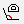
auf der Symbolleiste Hilfsmittel.
- Klicken Sie dreimal einzeln, um ein Segment, eine Vertex und ein weiteres Segment zu erstellen. Ein Bogen wird zwischen zwei Segmenten gezeigt. Im Zentrum des Bogen wird eine Beschriftung mit Winkel gezeigt.
Um eine Winkelanmerkung zu bearbeiten:
- Um den Winkel dieses Objekts zu ändern, klicken Sie auf das Objekt und dann einzeln, um die Bedienelemente anzuzeigen. Ziehen Sie an ihnen, um den Winkel zu verändern. Die Beschriftung mit dem Grad des Winkels wird zusammen mit der Änderung des Winkels verändert.

- Eine Beschriftung wird automatisch an das Zentrum des Bogens angehängt. Die Standardsyntax der Beschriftung ist $(v,.2). Sie zeigt den Winkel zwischen zwei Segmenten an. Klicken Sie doppelt, um die Syntax zu modifizieren, d. h. $(v, .3), um 3 Dezimalstellen zu zeigen, $(v*pi/180, .2), um Grad in Radiant zu konvertieren und 2 Dezimalstellen zu zeigen.
- Klicken Sie doppelt auf die Winkelanmerkung, um den Dialog Eigenschaften zu öffnen, in dem Sie die Linie, die Pfeilspitze(n), die Dimension, den Bogen oder den Code benutzerdefiniert anpassen können, wenn Sie auf sie klicken, sie verschieben, ihre Größe verändern möchten etc.
- Klicken Sie auf die Schaltfläche auf der Minisymbolleiste. Der Pfeil wird auf dem Bogen gezeigt.
Zeichnen von Polylinien (segmentierte Linien)
Um eine Polylinie zu zeichnen:
- Klicken Sie auf das Hilfsmittel Polylinie
 (auf der Symbolleiste Hilfsmittel) und anschließend einmal auf jeden vorgesehenen Ankerpunkt.
(auf der Symbolleiste Hilfsmittel) und anschließend einmal auf jeden vorgesehenen Ankerpunkt.
- Beenden Sie die Polylinie durch einen Doppelklick mit der Maus oder durch Drücken der Tasten ESC oder Enter.
Um die Polylinie zu bearbeiten:
- Um den Wendepunkt der Polylinie anzupassen, klicken Sie einmal auf die Polylinie. Die gefüllten Symbole für die Wendepunkte werden gezeigt. Verschieben Sie den Cursor auf den Punkt. Sie können dann die Position ändern, indem Sie an dem Punkt ziehen. Sie können auch auf die Schaltfläche auf der Minisymbolleiste Punkte bearbeiten klicken oder im Kontextmenü Punkte bearbeiten auswählen, um den Modus Punkte bearbeiten aufzurufen un die Punkte der Polylinie anzupassen.
- Um den Punkt zu verschieben oder seine Größe zu ändern, klicken Sie zweimal, bis die diamantförmigen Bedienelemente gezeigt werden. Ziehen Sie an ihr, um sie zu verschieben, oder ziehen Sie an den Elementen, um die Größe zu verändern. Drücken Sie während des Ziehens an den Bedienelementen die Strg-Taste, um das Seitenverhältnis der Linie beizubehalten.
- Um sie zu drehen, klicken Sie dreimal, bis kreisförmige Bedienelemente um sie herum gezeigt werden. Ziehen Sie an dem Kreiselement, um sie zu drehen. Ziehen Sie den Cursor in die Mitte der Form, um das Zentrum der Drehung zu ändern.
- Um die Linie schief anzuzeigen, klicken Sie viermal, bis dreieckige Bedienelemente um die Form herum gezeigt werden. Ziehen Sie an dem Dreieckselement, um die Polylinie schief anzuzeigen.
- Klicken Sie doppelt auf die Polylinie, um den Dialog Eigenschaften zu öffnen, in dem Sie die Linie, die Pfeilspitze(n), die Dimension, die Füllung oder den Code benutzerdefiniert anpassen können, wenn Sie auf sie klicken, sie verschieben, ihre Größe verändern möchten etc.
Glatte Kurve zeichnen
Um eine glatte Kurve zu zeichnen:
- Klicken Sie auf das Hilfsmittel Kurve
 (auf der Symbolleiste Hilfsmittel) und anschließend einmal auf jeden vorgesehenen Ankerpunkt.
(auf der Symbolleiste Hilfsmittel) und anschließend einmal auf jeden vorgesehenen Ankerpunkt.
- Beenden Sie die Kurve durch einen Doppelklick mit der Maus oder durch Drücken der Tasten ESC oder Enter.
Um eine geschlossene Kurve zu zeichnen:
- Klicken Sie auf das Hilfsmittel Kurve (auf der Symbolleiste Hilfsmittel) und anschließend einmal auf jeden vorgesehenen Ankerpunkt.
- Verschieben Sie den Cursor in die Nähe des Anfangspunkts. Er wird automatisch zum Anfangspunkt gezogen. Wenn Sie jetzt einmal klicken, wird die Zeichnung mit einer geschlossenen Kurve beendet.
Um die Kurve zu bearbeiten:
- Um die Kurve zu verschieben oder ihre Größe zu ändern, klicken Sie einmal, bis die diamantförmigen Bedienelemente gezeigt werden. Ziehen Sie an ihr, um sie zu verschieben, oder ziehen Sie an den Elementen, um die Größe zu verändern. Drücken Sie während des Ziehens an den Bedienelementen die Strg-Taste, um das Seitenverhältnis der Linie beizubehalten.
- Um den Pfeil zu drehen, klicken Sie zweimal, bis kreisförmige Bedienelemente um ihn herum gezeigt werden. Ziehen Sie an dem Kreiselement, um sie zu drehen. Ziehen Sie den Cursor in die Mitte der Form, um das Zentrum der Drehung zu ändern.
- Um die Linie schief anzuzeigen, klicken Sie dreimal, bis dreieckige Bedienelemente um die Form herum gezeigt werden. Ziehen Sie an dem Dreieckselement, um die Polylinie schief anzuzeigen.
- Sie können auch 4-mal einzeln oder auf die Schaltfläche auf der Minisymbolleiste Punkte bearbeiten klicken oder im Kontextmenü Punkte bearbeiten auswählen, um den Modus Punkte bearbeiten aufzurufen und die Spur der Kurve anzupassen.
- Klicken Sie doppelt auf die Polylinie, um den Dialog Eigenschaften zu öffnen, in dem Sie die Linie, die Pfeilspitze(n), die Dimension, die Füllung oder den Code benutzerdefiniert anpassen können, wenn Sie auf sie klicken, sie verschieben, ihre Größe verändern möchten etc.
Freihandzeichnen von Linien
Um eine Linie Freihand zu zeichnen:
- Klicken Sie auf das Hilfsmittel Freihandfigur einfügen
 .
.
- Klicken Sie einmal und halten Sie die Maustaste gedrückt, während Sie Ihre Linie zeichnen.
- Geben Sie die Maustaste zum Abschließen der Operation frei.
Um die Freihandlinie zu bearbeiten:
- Um die Kurve zu verschieben oder ihre Größe zu ändern, klicken Sie einmal, bis die diamantförmigen Bedienelemente gezeigt werden. Ziehen Sie an ihr, um sie zu verschieben, oder ziehen Sie an den Elementen, um die Größe zu verändern. Drücken Sie während des Ziehens an den Bedienelementen die Strg-Taste, um das Seitenverhältnis der Linie beizubehalten.
- Um den Pfeil zu drehen, klicken Sie zweimal, bis kreisförmige Bedienelemente um ihn herum gezeigt werden. Ziehen Sie an dem Kreiselement, um sie zu drehen. Ziehen Sie den Cursor in die Mitte der Form, um das Zentrum der Drehung zu ändern.
- Um die Linie schief anzuzeigen, klicken Sie dreimal, bis dreieckige Bedienelemente um die Form herum gezeigt werden. Ziehen Sie an dem Dreieckselement, um die Polylinie schief anzuzeigen.
- Sie können auch 4-mal einzeln oder auf die Schaltfläche auf der Minisymbolleiste Punkte bearbeiten klicken oder im Kontextmenü Punkte bearbeiten auswählen, um den Modus Punkte bearbeiten aufzurufen und die Spur der Linie anzupassen.
- Klicken Sie doppelt auf die Kurve, um den Dialog Eigenschaften zu öffnen, in dem Sie die Linie, die Pfeilspitze(n), die Dimension oder den Code benutzerdefiniert anpassen können, wenn Sie auf sie klicken, sie verschieben, ihre Größe verändern möchten etc.
Zeichnen von zweidimensionalen Objekten
-
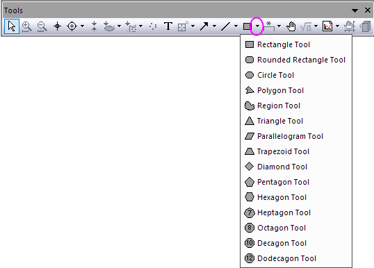
Quadrat, Rechteck, Kreis, Oval, Polygon oder Bereich hinzufügen
- Klicken Sie auf die jeweilige Schaltfläche auf der Symbolleiste Hilfsmittel.
- Für alle Objekte außer dem Polygon klicken Sie auf die gewünschte Stelle im Diagrammfenster und ziehen das Objekt mit der Maus dorthin. Geben Sie die Maustaste frei, um das Objekt anzuzeigen.
- Klicken Sie für Polygone einmal, um die Ecken des Polygons zu zeichnen. Klicken Sie doppelt auf die letzte Ecke.
- Um ein perfektes Quadrat bzw. einen perfekten Kreis zu zeichnen statt eines Rechtecks oder Ovals, drücken Sie beim Ziehen die Strg-Taste.
- Abgerundetes Rechteck, Dreieck, Parallelogramm, Trapez, Diamant, Fünfeck, Sechseck, Siebeneck, Achteck, Zehneck, Zwölfeck werden seit Version 2025b unterstützt.
Um das Objekt zu bearbeiten:
- Um die Objekte zu verschieben oder ihre Größe zu ändern, klicken Sie einmal, bis diamantförmige Bedienelemente um das Objekt herum gezeigt werden. Ziehen Sie an ihr, um sie zu verschieben, oder ziehen Sie an den Elementen, um die Größe zu verändern. Drücken Sie während des Ziehens an den Bedienelementen die Strg-Taste, um das Seitenverhältnis der Form beizubehalten.
- Um die Objekte zu drehen, klicken Sie zweimal, bis kreisförmige Bedienelemente um das Objekt herum gezeigt werden. Ziehen Sie an dem Kreiselement, um sie zu drehen. Ziehen Sie den Cursor in die Mitte der Form, um das Zentrum der Drehung zu ändern.
- Um das Objekt schief anzuzeigen, klicken Sie dreimal, bis dreieckige Bedienelemente um die Form herum gezeigt werden. Ziehen Sie an dem Dreieckselement, um die Polylinie schief anzuzeigen.
- Für ein Polygon oder einen Bereich können Sie 4-mal einzeln klicken oder auf die Schaltfläche der Minisymbolleiste Punkte bearbeiten oder Sie wählen im Kontextmenü Punkte bearbeiten, um den Modus Punke bearbeiten aufzurufen (Bedienelemente werden entlang des Rahmens angezeigt) und die Form weiter anzupassen.
- Klicken Sie für das abgerundete Rechteck einmal auf das Objekt. Am Rand wird ein roter Ankerpunkt angezeigt. Klicken Sie auf diesen Ankerpunkt und ziehen Sie an ihm, um den Radius für die abgerundete Ecke zu ändern.
- Klicken Sie für das Dreieck, Parallelogramm und Trapez einmal auf das Objekt. Am Rand wird ein roter Ankerpunkt angezeigt. Klicken Sie auf diesen Ankerpunkt und ziehen Sie an ihm, um die Form für diese Objekte zu ändern.

- Für das Trapez gibt es eine Schaltfläche Gleichschenkeliges Trapez auf der Minisymbolleiste. Diese Schaltfläche ist standardmäßig aktiviert. Wenn sie deaktiviert ist, werden Ihnen zwei Ankerpunkte auf dem Trapez gezeigt. Sie können den Abstand von links und rechts separat ändern.

- Klicken Sie doppelt auf das Objekt, um den Dialog Eigenschaften zu öffnen, in dem Sie Rahmen, Füllung, Position oder Code benutzerdefiniert anpassen können, wenn Sie auf das Objekt klicken, es verschieben, seine Größe verändern möchten etc.
Objekte bearbeiten
Ein gezogenes Objekt hat vier mögliche Bearbeitungsmodi, die durch wiederholte, langsame Klicks auf das Objekt aufgerufen werden.
- Die Reihenfolge der Modi kann sich für einige Objekt unterscheiden, aber die Form der Auswahlelemente zeigt an, welche Modus gerade aktiv ist.
- Wenn Sie eine Bearbeitungsoption deaktivieren (d. h. Gruppe Deaktivieren, Registerkarte Dimensionen der Eigenschaften), ist der verbundene Bearbeitungsmodus nicht verfügbar, wenn Sie nacheinander durch die Bearbeitungsmodi klicken.
| Modus |
Beschreibung |

|
Punkt bearbeiten
- Auswahlelement Quadrat. Mehr einzelne Punkte
|

|
Größe verändern
- Auswahlelement Diamant. Verschieben Sie die Auswahlelemente in eine der beiden zugelassenen Richtungen (d. h., wenn Sie Vertikale Verschiebung deaktivieren, können Sie die Größe nicht in vertikaler Dimension verändern).
|
|
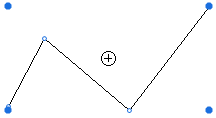
|
Drehen
- Rundes Auswahlelement. Drehen Sie das Objekt um die Achse der Drehung (d. h. das Fadenkreuz).
|
|
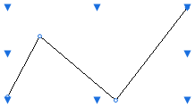
|
Schief anzeigen
- Dreieckiges Auswahlelement. Aktivieren Sie das schiefe Anzeigen des Objekts.
|
Weitere Bedienelemente zum Aufrufen des Modus Punkte bearbeiten
Um den Modus Punkte bearbeiten aufzurufen und mit ihm die Form von Zeichnungsobjekten (einschließlich dem ROI-Feld der Analysehilfsmittel) anzupassen, können Sie entweder 4-mal einzeln auf das Objekt klicken oder mit der rechten Maustaste auf das Objekt klicken, um im Kontextmenü Punkte bearbeiten auszuwählen, oder auf die Schaltfläche auf der Minisymbolleiste Punkte bearbeiten klicken.
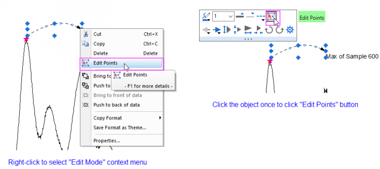
Kopieren und Einfügen von Objekten
Dies wird für einzelne Objekte oder mehrere Objekte unterstützt.
Um ein Objekt zu kopieren:
- Klicken Sie auf das Objekt oder ziehen Sie mit dem Zeiger
 ein Auswahlrechteck um das Objekt (Auswahlelemente werden angezeigt).
ein Auswahlrechteck um das Objekt (Auswahlelemente werden angezeigt).
- Um mehrere Objekte auszuwählen, klicken Sie auf das erste Objekt, drücken Sie dann die Strg-Taste oder die Shift-Taste und fahren Sie mit der Auswahl fort. Sie können alternativ ein großes Feld um alle Objekte ziehen, die Sie auswählen möchten.
- Drücken Sie Strg+C, wählen Sie im Menü Bearbeiten: Kopieren oder klicken Sie mit der rechten Maustaste auf das ausgewählte Objekt und wählen Sie im Kontextmenü Kopieren.
Um das Objekt einzufügen:
- Klicken Sie einmal auf die Stelle, wo Sie das Objekt einfügen möchten. Dann wählen Sie Bearbeiten: Einfügen oder drücken Sie Strg + V, um das Objekt einzufügen. Oder klicken Sie mit der rechten Maustaste auf die Stelle, wo Sie es einfügen möchten und wählen Sie Einfügen im Kontextmenü.
- Origin 2025 führt die Tastenkombination Strg+Shift+V ein, um genau an der gleichen Stelle einzufügen, wo sich die ursprünglichen Objekte befunden haben. Auf neuen Diagrammobjekten wird an genau der gleichen Stelle eingefügt. Im gleichen Diagramm überschneiden sich Objekte mit dem Objekt an der gleichen Stelle.
 |
- Nach Auswahl von mehreren Objekten können Sie auf die Symbolleistenschaltfläche Gruppieren auf der Symbolleiste Objekt bearbeiten klicken, um sie zu gruppieren. Wenn Sie später auf ein einzelnes Objekt klicken, werden alle Objekte in der Gruppe ausgewählt. Die Funktion Einfügen fügt sie dann auch als Gruppe ein. Sie können die Gruppierung hinterher auflösen, um jedes Objekt separat zu bearbeiten.
- Vor Origin 2018b wurden eingefügte Objekte standardmäßig hinter dem zuletzt eingefügten Objekt positioniert. In Origin 2018b und höheren Versionen werden eingefügte Objekte vor dem zuletzt eingefügten Objekt eingefügt. Sie können die Reihenfolge der sich überschneidenden Objekte durch einen Rechtsklick auf das Objekt und Auswahl eines der Optionen zum Ordnen der Objekte im Kontextmenü ändern.
|
Linienobjekte kopieren und Daten in ein Arbeitsblatt einfügen
Jedes der Linienobjekte - Linie, Pfeil, gekrümmter Pfeil, Polylinie oder Freihand -- kann verwendet werden, um einen XY-Datensatz zu erzeugen:
- Markieren Sie das Linienobjekt in dem Diagramm, klicken Sie dann mit der rechten Maustaste und wählen Sie Kopieren.
- Klicken Sie auf eine leere Arbeitsblattzelle, machen Sie einen Rechtsklick und wählen Sie Einfügen.
Es wird ein Satz XY-Koordinaten im Arbeitsblatt erstellt.
Klammern mit Sternchen hinzufügen, um Gruppierungen auf statistischen Diagrammen zu kennzeichnen
Es ist üblich, besonders in den Life Sciences, Säulen- und Balkendiagramme zu erstellen und ein Objekt "Klammer mit Sternchen" zu verwenden, um signifikante Unterschiede zu kennzeichnen. Klammern können zu einem Origin-Diagramm mit Hilfe der Schaltfläche Klammern mit Sternchen hinzufügen  (Symbolleiste Objekt zu Diagramm hinzufügen hinzugefügt werden. Diese Gruppe unterstützt 5 Klammertypen. Sie können auf den nach unten weisenden Pfeil neben der Schaltfläche kicken, um den gewünschten Klammertyp auszuwählen:
(Symbolleiste Objekt zu Diagramm hinzufügen hinzugefügt werden. Diese Gruppe unterstützt 5 Klammertypen. Sie können auf den nach unten weisenden Pfeil neben der Schaltfläche kicken, um den gewünschten Klammertyp auszuwählen:
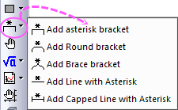
- Klicken Sie auf die Schaltfläche Klammern mit Sternchen hinzufügen und ziehen Sie dann ein Rechteck auf dem Diagramm auf, um das Objekt hinzuzufügen. Hinweis: Sie können auf die Shift-Taste klicken, um die Richtung der Klammern während des Ziehens zu ändern.
- Wählen Sie das Objekt und positionieren Sie es dann mit Hilfe des Maus neu.
-
- Verwenden Sie die blauen Elemente um die Größe und Position der Klammer"beinchen" zu verändern.
- Verwenden Sie die roten Elemente, um die Krümmung der Klammer"schultern" hinzuzufügen.
- Beachten Sie, dass Sie den Textblock in der Mitte der Klammer manuell bearbeiten können, um Sternchen (*), p-Werte etc. hinzuzufügen.
- Wenn die Klammer ausgewählt ist, können Sie auch die Schaltflächen der Minisymbolleiste verwenden, um die Klammern auszurichten, die Liniendicke, den Klammerntyp etc. zu modifizieren.
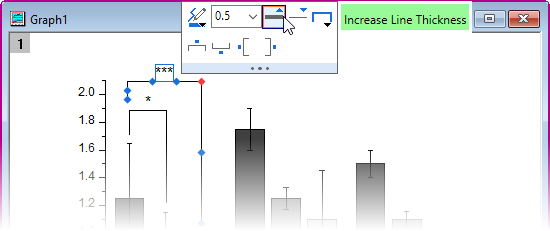
|
- Durch Klicken auf die Schaltfläche Klammern in den Versionen älter als Origin 2025b wird ein Klammerobjekt mit Standardgröße an einer Standardstelle im Diagramm erstellt. Seit Origin 2025b wurde ein weiteres Standardverhalten eingeführt: Nachdem Sie auf die Schaltfläche Klammern geklickt haben, ziehen Sie ein Rechteck auf, um die Klammern in gewünschter Größe zu positionieren. Um zwischen den Verhaltenmodi zu wechseln, können Sie die Systemvariable @BDM festlegen.
- Die Form des Linienendes (rund, quadratisch, flach) wird von der LabTalk-Systemvariable @LCG gesteuert.
Informationen um Ändern des Werts einer Systemvariablen finden Sie in dieser FAQ.
|